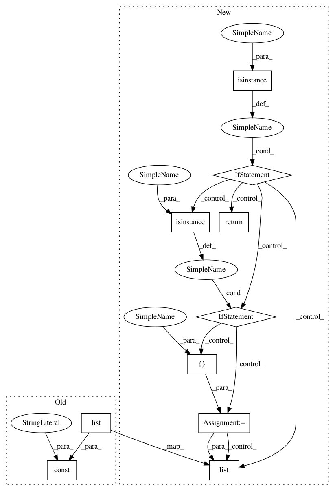

16b2a4b66dc3ff7c20da59fee9cc047a1593cf64,python/tvm/relay/op/transform.py,,full,#Any#Any#Any#,360
Before Change
The resulting tensor.
if isinstance(shape, (list, tuple)):
shape = const(list(shape), "int32")
return _make.full(fill_value, shape, dtype)
def full_like(data, fill_value):
After Change
result : relay.Expr
The resulting tensor.
if isinstance(shape, Expr):
return _dyn_make.full(fill_value, shape, dtype)
if isinstance(shape, int):
shape = [shape]
if isinstance(shape, (list, tuple)):
shape = list(shape)
return _make.full(fill_value, shape, dtype)
def full_like(data, fill_value):
In pattern: SUPERPATTERN
Frequency: 4
Non-data size: 10
Instances
Project Name: apache/incubator-tvm
Commit Name: 16b2a4b66dc3ff7c20da59fee9cc047a1593cf64
Time: 2020-08-13
Author: lorthsmith@octoml.ai
File Name: python/tvm/relay/op/transform.py
Class Name:
Method Name: full
Project Name: apache/incubator-tvm
Commit Name: a23592cdd3c28aae31ee0e5c713cfe02f5ad3cab
Time: 2020-07-14
Author: lorthsmith@octoml.ai
File Name: python/tvm/relay/op/tensor.py
Class Name:
Method Name: zeros
Project Name: apache/incubator-tvm
Commit Name: a23592cdd3c28aae31ee0e5c713cfe02f5ad3cab
Time: 2020-07-14
Author: lorthsmith@octoml.ai
File Name: python/tvm/relay/op/tensor.py
Class Name:
Method Name: ones
Project Name: apache/incubator-tvm
Commit Name: a23592cdd3c28aae31ee0e5c713cfe02f5ad3cab
Time: 2020-07-14
Author: lorthsmith@octoml.ai
File Name: python/tvm/relay/op/transform.py
Class Name:
Method Name: broadcast_to